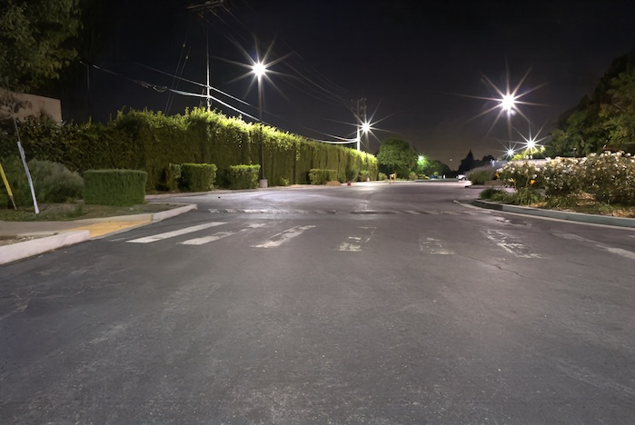
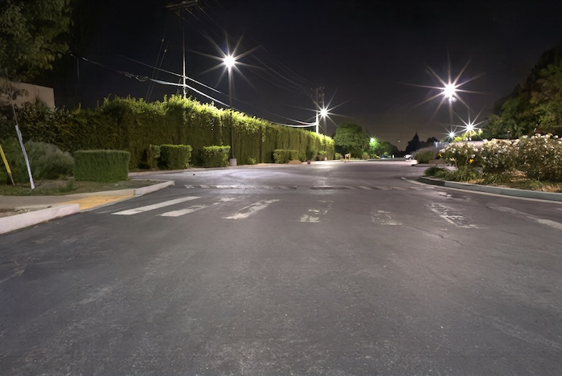

Paper
Ahmet Serdar Karadeniz, Erkut Erdem, and Aykut Erdem. "Burst Photography for Learning to Enhance Extremely Dark Images", IEEE Transactions on Image Processing, in press.
Paper (high-res) | Paper (low-res) | Bibtex
Abstract
Capturing images under extremely low-light conditions poses significant challenges for the standard camera pipeline. Images become too dark and too noisy, which makes traditional enhancement techniques almost impossible to apply. Recently, learning-based approaches have shown very promising results for this task since they have substantially more expressive capabilities to allow for improved quality. Motivated by these studies, in this paper, we aim to leverage burst photography to boost the performance and obtain much sharper and more accurate RGB images from extremely dark raw images. The backbone of our proposed framework is a novel coarse-to-fine network architecture that generates high-quality outputs progressively. The coarse network predicts a low-resolution, denoised raw image, which is then fed to the fine network to recover fine- scale details and realistic textures. To further reduce the noise level and improve the color accuracy, we extend this network to a permutation invariant structure so that it takes a burst of low-light images as input and merges information from multiple images at the feature-level. Our experiments demonstrate that our approach leads to perceptually more pleasing results than the state-of-the-art methods by producing more detailed and considerably higher quality images.
Introduction
Capturing images in low-light conditions is a challenging task -- the main difficulty being that the level of the signal
measured by the camera sensors is generally much lower than the noise in the measurements
While the previous methods
System Overview
To recover fine-grained details from dark images, we propose to employ a two-step coarse-to-fine training procedure. Our coarse network outputs a denoised image in rawRGB space. We utilize the output of the coarse network not just for guidance in assisting the fine network but also in approximating the noise by computing the difference between the upsampled coarse prediction and the raw low-light input. The fine network takes the concatenation of the low-light raw input image, the output from the coarse network and the noise approximation as inputs and processes them to generate the final RGB output.
We extend our coarse-to-fine model to a novel permutation invariant CNN architecture which takes multiple images of the scene as input and predicts an enhanced image. In particular, first, low-resolution coarse outputs are obtained for each frame in the burst sequence, using our coarse network. Then, our set-based network accepts a set of tensors as input, each instance corresponding to the concatenation of one of raw burst images, its noise approximation and the upsampled version of the coarse prediction and produces final output.
To obtain robustness to small motions, we apply max fusion between the features of burst frames after the second convolution block.
As the features are downsampled, their alignment becomes much easier and the network benefits from the fusion of the higher-level features.
To deal with large motions in the scene, however, we can utilize the outputs of our coarse network to estimate optical flows between consecutive frames.
In our experiments, we employ the method in
Results
Single Image Results
Sony a7s II, ISO 12800 1/10s

iPhone 6s, ISO 400 1/20s

Burst Results
Sony a7s II, ISO 640 1/10s, 8 Frames
 

Sony a7s II, ISO 1600 1/10s, 8 Frames